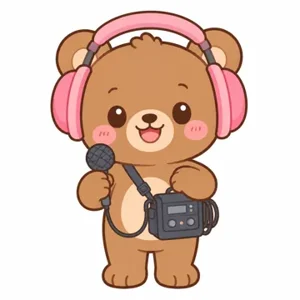

영화 속 발소리, 빗소리, 문 삐걱 소리는 사실 스튜디오에서 물건으로 직접 만든 소리가 많아요. 이렇게 소리를 만드는 사람을 폴리 아티스트라고 불러요. 휴지를 구기면 삼겹살 굽는 소리가 난다는 거 알고 있었나요?
연습실에서 12가지 도구를 하나씩 눌러 소리를 들어요.
소리가 없는 장면이 나와요. 어떤 소리가 어울릴지 생각해요.
알맞은 도구를 골라 녹음하면 통과! 10단계까지 도전해요.
위 어린이는 10개의 장면에 꼭 맞는 소리를 만들어 넣었기에 이 인증서를 드립니다.

영화 속 소리를 물건으로 직접 만드는 폴리 아티스트가 되어, 소리 없는 장면에 꼭 맞는 효과음을 찾아 넣는 소리 탐구 놀이예요.
선생님 한마디 게임 속 효과음은 실제 물건 소리처럼 만든 소리예요. 놀이 뒤에 진짜 물건으로 소리를 내 보면 “정말 비슷하다!” 하는 감탄이 더 커져요.